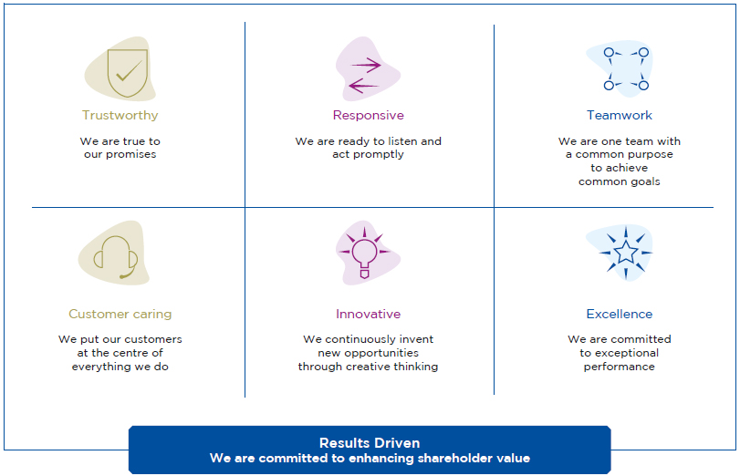
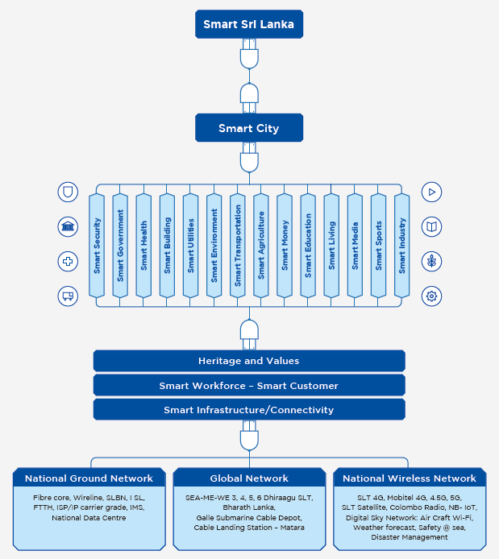
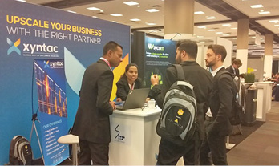
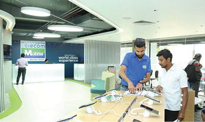
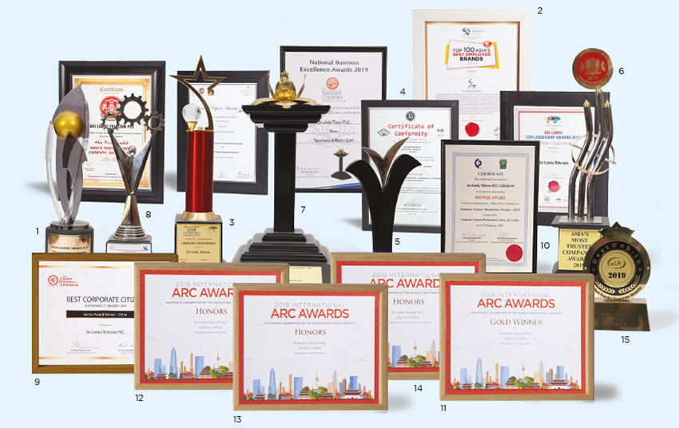
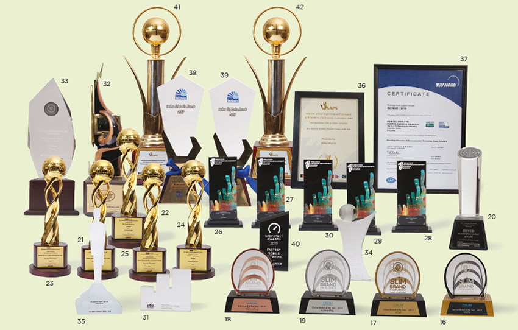

Management Discussion and Analysis
Institutional Capital


The largely intangible, non-financial components that SLT uses to establish its position as Sri Lanka’s leading digital service provider comprise its institutional capital.

Seven core values lie at the heart of SLT and are the foundation of our institutional capital. They encompass every aspect of the corporate culture that permeates the SLT Group, including components such as organisational knowledge, our brand and reputation, our internal systems, and our ethical standards.
SLT’s corporate culture is one of professionalism that encourages communication and engagement with employees. New employees are inculcated into this environment through our induction schemes and the Company hosts a variety of team building activities and refresher programmes to help enrich and uphold the unique corporate culture. Employees are encouraged to make their own contribution to SLT’s culture through suggestion schemes, registers, and brainstorming sessions.
Towards a smarter Sri Lanka
SLT embarked on a large-scale ICT infrastructure development project that will utilise the Company’s core infrastructure, products, services, platforms, and resources to achieve various goals. SLT, with the support of its subsidiaries will take on several projects with the goal of building a smarter Sri Lanka. The SLT Group is proud to take on this mission to transform the nation and the lives of citizens through its broad vision for the future of Sri Lanka’s digital landscape.

Polonnaruwa Smart City
A major contribution we made towards the development of the country was the expansion of services under the “Pibidemu Polonnaruwa” district development project. SLT completed over 14 ICT projects for the benefit of residents in the Polonnaruwa District.
SLT has implemented several major ICT initiatives as part of the project, including transforming the Regional Telecom Office with cutting-edge technology, urban and rural communication development projects across the District, the provision of 5G technology to the “Deepa Uyana”, and the provision of broadband services to over 100 schools under the “Smart School” project. SLT also established 17 service units in the development of ICT infrastructure, ensuring continuous service availability to the public.
The initiative is yet another example of the responsibility assumed by the SLT Group in enriching the lives of citizens in different areas of the country. SLT has a great responsibility to step forward in every possible way to support the Government in empowering the nation with state-of-the-art ICT technologies.
Xyntac
A milestone was achieved by launching the Xyntac brand at the International Telecom Week (ITW) 2019 held in Atlanta, USA. SLT will use Xyntac to better position itself in the global market as a true global carrier and promote voice and data services along with innovative digital services to cater to evolving global market requirements.

SME Solutions Partnership Day 2019
A significant event we held was the SME Solutions Partnership Day 2019 at the Taj Samudra, Colombo. SLT signed agreements with 27 SME solutions providers for a period of three years, which will enable it to provide “total solutions” to the SME sector. The agreements cover a wide range of solutions categories including unified communications, networking infrastructure, CCTV surveillance, and cabling.
SLT Digitastic – Digital Lifestyle Expo
A partnership was entered into by SLT with the national ICT expo, Infotel 2019, to launch the first “SLT Digitastic – Digital Lifestyle Expo” at the BMICH in November 2019. The Company demonstrated several digital products and smart concepts, offering visitors the opportunity to experience what next generation digitally enabled “smart” lifestyles are all about. SLT Smart Home, 1 Gbps fibre download speeds, IoT for schools, the SLT Selfcare app and the revamped SLT Broadband Portal were launched at the event, together with the SLT 01 Awards for Digital Excellence 2018/19. Visitors were entertained with the latest in digital entertainment, including e-sports, augmented reality (AR) and virtual reality (VR), and holograms.
Google I/O Extended Sri Lanka 2019
The Google I/O Extended event is an exciting and interactive overnight event with a live stream of the Google keynote from the USA focused on the next generation of technology that consumers can expect to see in the near future.
Mobitel hosted the popular Google I/O Extended Sri Lanka event for the sixth consecutive year at Stein Studios in May 2019. Given the tragic situation that had struck the country in April, the event was a live online event, a difficult decision Mobitel took to ensure the personal safety of attendees. The Mobitel Innovation Centre team arranged an exciting line-up, making for an unforgettable event. Audiences were treated to exclusive sessions focusing on 5G, technology for a greener future, and “Island Mentality vs Start-up Mentality”, an informative panel discussion with key individuals in the Sri Lankan start-up ecosystem.
South Asia’s first 5G network
Mobitel demonstrated 5G connectivity via a commercial 5G smartphone for the first time in South Asia in June 2019, and shortly thereafter demonstrated the highest mobile 5G speeds of over 1.55 Gbps, a momentous landmark in 5G deployment across the globe. Mobitel’s successful demonstrations followed similar demonstrations in the USA and South Korea in April 2019. The mobile 5G services were demonstrated using Huawei 5G network equipment on a 3.6 GHz trial spectrum allocation from the TRCSL.

Ookla, the global leader for speed test benchmarking, recognised Mobitel as the first mobile 5G trial network in South Asia in their 5G map, a proud achievement for Sri Lanka. In order to raise public awareness on 5G technology capabilities, Mobitel conducted a series of public demonstrations on 5G applications in Sri Lanka. Mobitel intends to continue working towards 5G readiness and a commercial launch once the spectrum has been allocated.
Limitless You
The “Limitless You” campaign was conducted across the SLT Group to utilise and share the benefits of Group synergy. Each subsidiary in the Group carried out activities that pertained to their unique capabilities and resources towards the benefit of the group. For example, VisionCom leveraged its PEO TV platform to provide sales and brand promotion for the other Group subsidiaries. HCS carried out human capital development to meet the staff requirements of other subsidiaries, as well as BPO activities for the Group.
Awards and recognition
BestWeb.lk Awards 2019
SLT’s corporate website, www.slt.lk, was awarded the title of “Most Popular Corporate Website” at the prestigious BestWeb.lk Awards 2019. The SLT corporate website serves as the Company’s virtual presence on the internet and is often the primary touchpoint for customers to find information and pay their bills. The website also caters to a diverse audience including investors, business organisations, and the general public. SLT’s website is among the top 20 traffic ranking websites in Sri Lanka with over 800,000 page views per month, 60% of which are mobile users.
Quality Management System
SLT received the ISO 9001:2015 Quality Management System (QMS) certification issued by the Sri Lanka Standards Institution (SLSI) in 2019, the first ICT organisation in Sri Lanka to do so. The certification covers all the business units of SLT including local and international services provided by the Company, and the operations of Teleshops, Regional Offices, Contact Centres, Customer Experience Centres, Customer Service/Billing Centres, Operations and Maintenance Centres, and Training Centres across the country.
Information security
SLT’s information security policy complies with the ISO/IEC 27001:2013 International Standard. SLT continually evaluates its infrastructure and takes the appropriate measures necessary to maintain compliance.
Compliance
SLT takes every effort to comply with all rules, regulations, and standards where applicable. All company policies, procedures, and guidelines are developed in compliance with regulatory and statutory requirements, and separate regulatory and legal divisions monitor all regulatory and statutory ratifications. SLT complies with all Government regulations and adheres to the rules and regulations imposed on it as a listed company by the Colombo Stock Exchange (CSE).
SLT’s human resource practices comply with labour regulations and relevant statutory collateral, and employees are informed of relevant developments via the SLT Intranet portal. The Company also takes steps to ensure the compliance of outsourced operations, such as making contributions to Employees’ Provident Fund (EPF) and Employees’ Trust Fund (ETF).
SLT’s activities are compliant with established guidelines on environmental protection.
SLT’s compliance is audited by Auditors internally and externally, and for the period under review, SLT did not default in relation to issues of non-compliance with laws and regulations pertaining to the provision and use of our products and services. No complaints were received regarding discordances on customer privacy.
Risks and contingencies
The Board of Directors bears total responsibility for the establishment and monitoring of the Group’s risk management framework (page 104). The Audit Committee inspects Management’s monitoring of compliance with the Group’s risk management processes. Aspects of financial risk management are covered under Note 4 to the Financial Statements commencing on page 138. Any other extraneous aspects are discussed under Note 31 to the Financial Statements on pages 175, 176.
SLT
1. Gold award
CA Sri Lanka Annual Report Awards 2019
2. Top 100
Asia’s Best Employer Brand Awards 2019
3. CSR Leadership Award
At “Sri Lanka’s Best Employer Brand Awards 2019” for community development
4. ISO 9001:2015 Quality Management System
Certification issued by the Sri Lanka Standards Institution (SLSI).
5. Quality Choice Prize 2019
Under the Gold Category hosted by the European Society for Quality Research (ESQR)
6. Asia's most trusted companies Awards 2019
7. Gold award
In the “Infrastructure and Utilities” sector at the National Business Excellence Awards
8. 1st Runner up Corporate Governance Disclosures
Best Presented Annual Report, BPA Report awards and SAARC Anniversary Awards for Communication and Information Technology sector
9. Sector Award
Best performance at the Best Corporate Citizen Sustainability Awards 2019, organised by the Ceylon Chamber of Commerce
10. Winner
“Broadband Service provider with Social Impact” at the Get To Fast Faster (GTFF) conference 2019
11. Gold winner – Arc Awards
Interior Design under telecommunication category
12. Honors – Arc Awards
Financial data under telecommunication category
13. Honors – Arc Awards
Non-Traditional Annual Report under telecommunication category
14. Honors – Arc Awards
Written Text under telecommunication category
15. Most popular Corporate web site
BestWeb.lk

MOBITEL
16. SLIMBE: Mobitel Finalist
Service provider of the year 2019 SLIM Brand Excellence Awards
17. SLIMBE: mCash Gold
Online Brand of the year 2019 SLIM Brand Excellence Awards
18. SLIMBE: eChannelling Bronze
B2B Brand of the year 2019
19. SLIMBE: eChannelling Silver
Online brand of the year 2019
20. LankaPay Technnovation Awards: Silver Award
mCash Lanka pay awarded the Most Popular Electronic Payment Product in the FinTech Category
21. ACEF Awards: Gold – Special Award
Best Use of Social Message for Customer Engagement – “Suicide Prevention Campaign”
22. ACEF Awards: Silver - Special Award
Most Admired Mobile App – “SelfCare App Campaign”
23. ACEF Awards: Silver - Digital Marketing
Successful Use of CSR Activity - “Suicide Prevention Campaign”
24. ACEF Awards: Gold
“Cash Bonanza” through the Innovative Loyalty Program
25. ACEF Awards: Gold
Data+ Credit Card Campaign Innovation
26. SEAC Awards: Silver
Best Brand Loyalty Marketing Campaign – “Cash Bonanza”
27. SEAC Awards: Gold
Best Use of Data & Research – “Upahara”
28. SEAC Awards: Bronze
Best Use of Data & Research – “Suicide Prevention”

29. SEAC Awards: Bronze
Excellence in Launch Marketing – “Master”
30. SEAC Awards: Gold
Excellence in Digital Transformation – “Mobitel Selfcare App”
31. SLIM Effie Awards 2019
Mobitel was recognized for effectiveness in marketing communications
32. Sumathi Awards: 1st Runner-Up
Best TV commercial category for Upahara
33. International Business Magazine:
Best Digital Finance Partnership Sri Lanka
Mobitel partnership with LOLC
34. International Business Magazine:
Most Innovative Digital Financing Product Sri Lanka
mCash Digital Loan
35. Best Employer Brand Award 2019
Employer Branding Awards
36. South Asia Business Excellence Awards:
Best Business Solutions Provider of the year 2019
37. ISO 9001:2015 Quality Certification
Mobitel Business Solutions
38. Techno Awards: Gold award
Stall with the Best Display & Demonstration of Engineering Products
39. Techno Awards: Merit Award
Stall displaying an Engineering product with the highest social impact
40. Ookla Speedtest Award 2019
The world renowned global leader in Internet Speed testing has crowned Mobitel as The fastest Mobile Internet Service Provider in Sri Lanka
41. South Asia Business Excellence Awards
Best Business Solution Provider of the year 2019
42. South Asia Business Excellence Awards
The “Best Healthcare ICT Services Provider in Sri Lanka 2019”